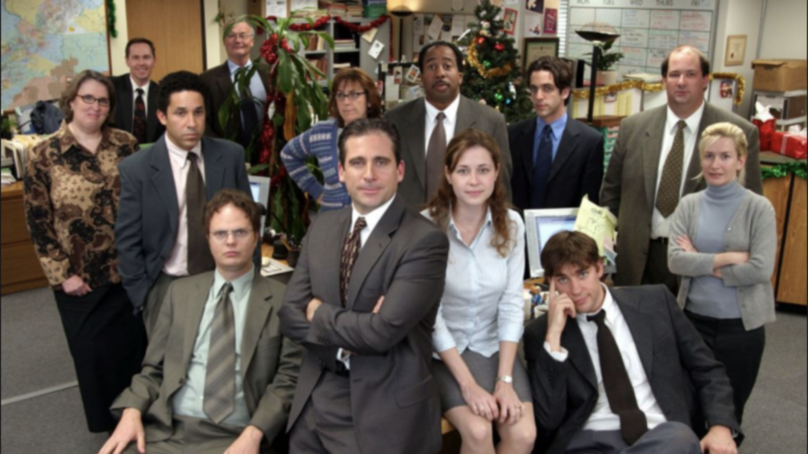
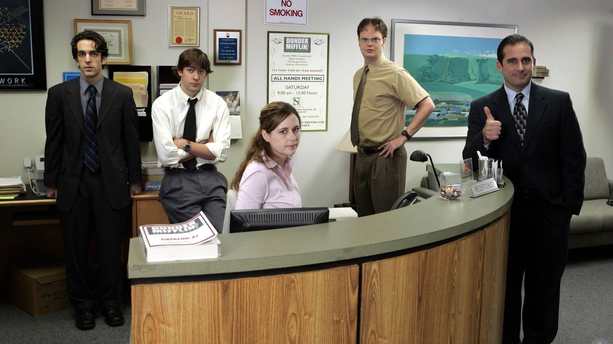
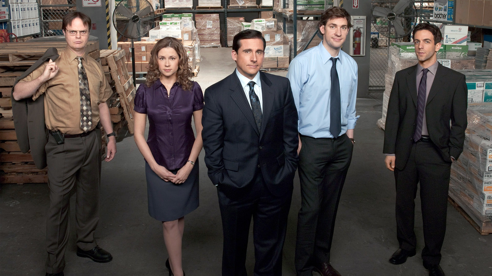
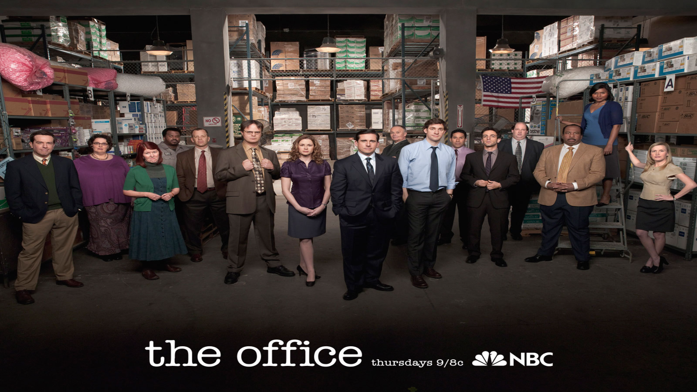
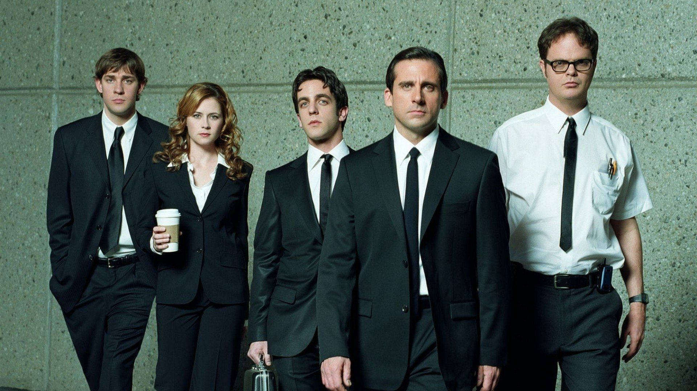

The office é uma série americana de gênero comédia, acompanhando o dia-a-dia de funcionários de um controverso escritório localizado em Scranton(Pensilvânia), onde somos apresentados ao gerente regional da Dunder Mifflin; Michael Scott e seus funcionários.